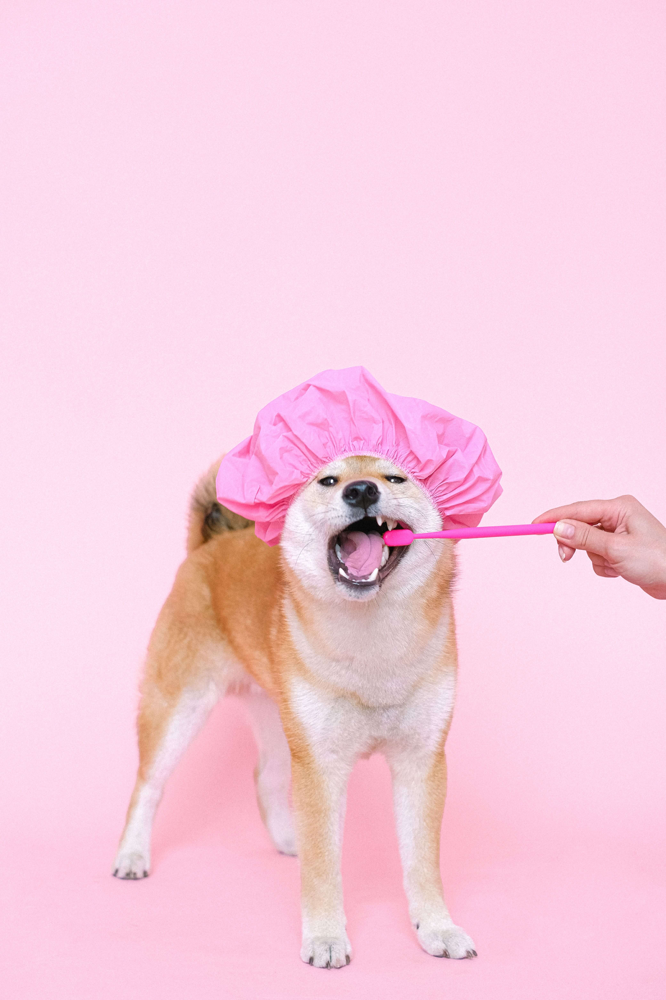

Happy dogs, snazzy styles
Snazzy Paws Grooming is Hamilton's friendly neighbourhood dog grooming salon. From a simple bath and brush to a full spa package, we treat every dog with patience, care and a little bit of flair. Open Monday to Saturday.
Book an appointmentWhy dog owners choose us
Experienced groomers
Our small, dedicated team has years of hands-on experience with every breed and coat type, so your dog is always in gentle hands.
Tailored care
Every groom is adjusted to your dog's age, temperament and coat — from playful puppies to gentle senior dogs.
Easy booking
Send us a booking request online any time and we'll confirm your appointment — no more waiting on hold.
A bit about us
Snazzy Paws Grooming was started by a couple of local dog lovers who wanted Hamilton to have a grooming salon that felt warm, welcoming and genuinely dog-friendly. We now support two dedicated groomers and are proud to be a regular stop for many of our four-legged customers.